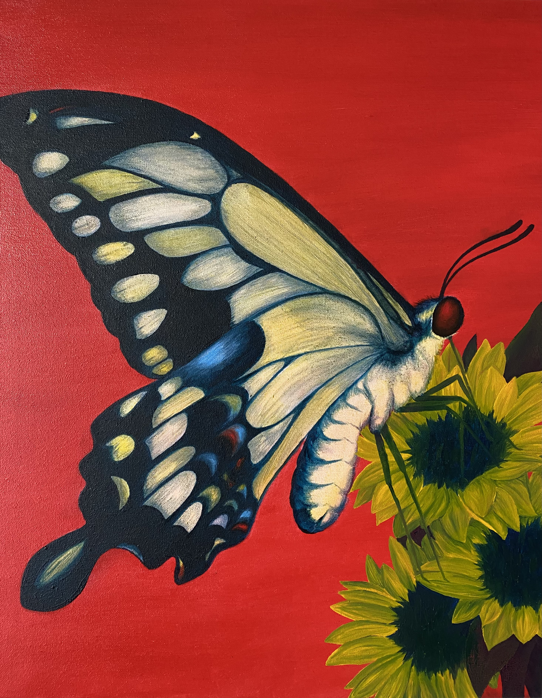
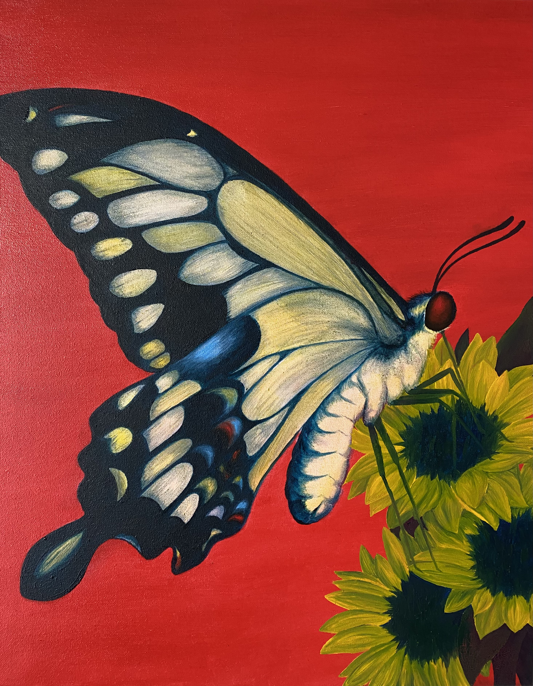
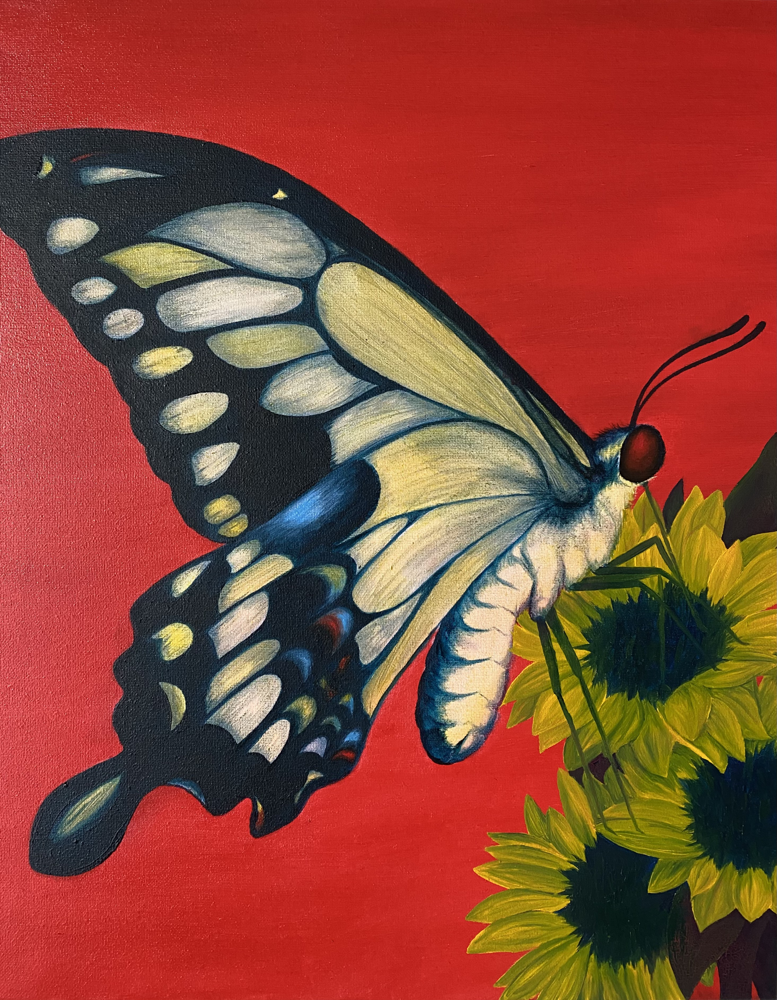
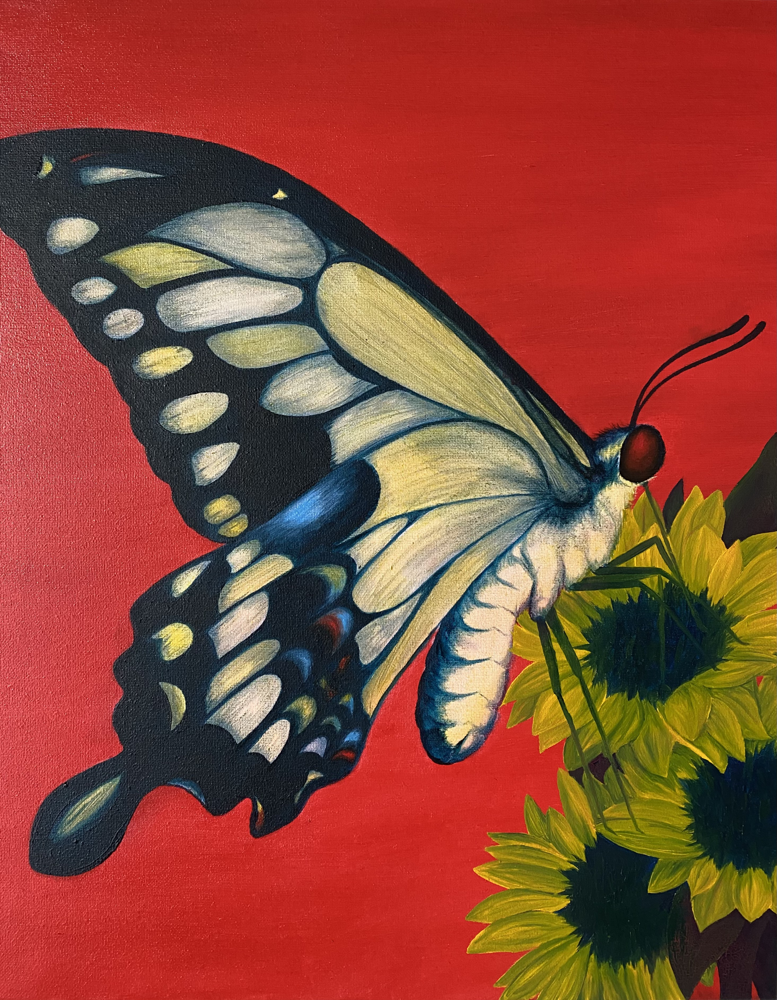
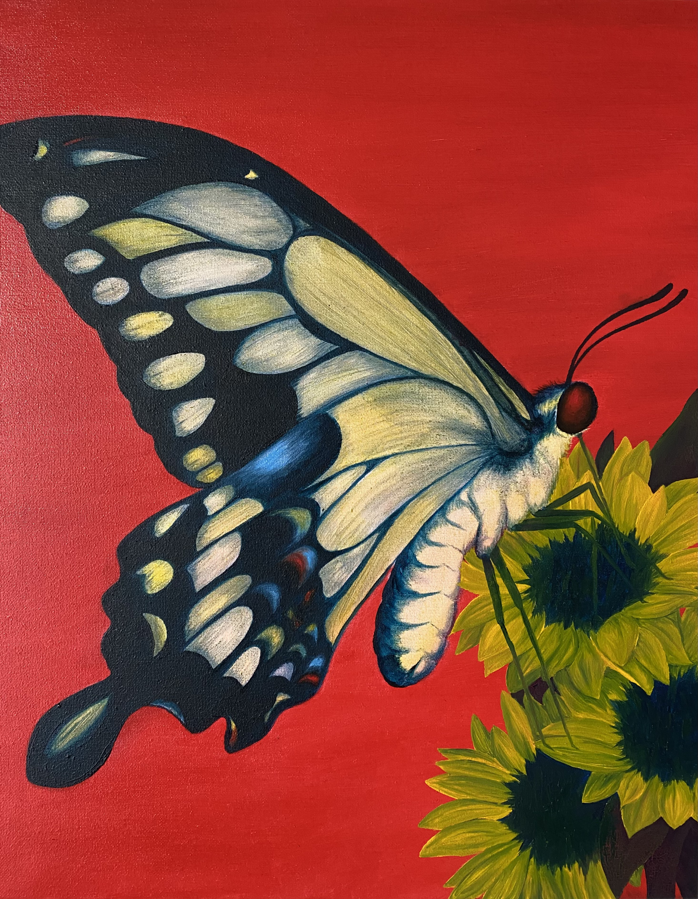

 

![photo of a skeleton wearing a red and white flannel shirt and a gold ring sitting at a desk holding a pencil while hunched over a variety of papers strewn over the desks surface, with its back to the camera. in front of the skeleton is a mirror that reflects the face of a young woman with brown hair and green eyes posed in the same position as the skeleton but instead from the front perspective as if she is the same figure. a large painting of a purple and blue octopus is edited to cover the wall directly behind of the desk](img/20201005 VanessaLang SelfPortrait DGT.jpeg)
![a digital collage depicting a circus. there are four characters done in illustrative realism and all of them are done in black and white shaded with hatching with a few colored accents on some of them. there is a headless male knife juggler who wears a red bowtie, black shoes, a white collared shirt, and long pants, a short, round, sad clown to the left of the knife juggler, who has a red nose, messy hair divided into three sections, a one piece outfit with three large buttons, and a ruffled collar, a skeleton dangling upside down from a trapeze above the knife juggler, and to the right side of the image an animal with the head of a tiger, the body of a zebra, and orange eyes sits in front of a large, decorative, gold and red cage. the background consists of a photo of a circus ring where three of the figures are placed surrounded in the front by silhouettes of audience members, and another photo of a vintage red sign with yellow letters that reads Big Top Circus.](img/20201111 Lang Vanessa Mash-Up DGT.jpeg)


![four images of a young woman. The face is angled so the left side is slightly in shadow and covered by her hair. She has three black earrings in her right ear and is waering a necklace with a circle pendant. her hair comes to just past her shoulders and is reddish brown, she has green eyes, and is wearing a green collared shirt. the second image is the same person but in a orange and red analogous color scheme, the third is complimentary with blue for the skin and hair and orange for the eyes and shirt, and the last is tetradic with a blue necklace, green skin and hair, a pinkish red shirt, and gold eyes.](img/20201026 Lang Vanessa Vector-PortraitDGT.jpg) 
